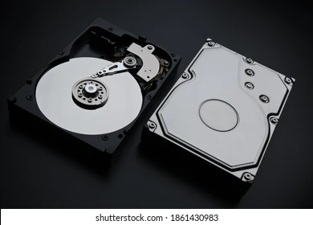

Componentes del Hardware
- DDR4: Es la más utilizada actualmente, ofrece mayor velocidad y eficiencia energética que sus predecesoras.
- DDR5: Es la más nueva y proporciona aún mayores velocidades y ancho de banda, ideal para tareas intensivas como gaming y edición de video.
- HDD (Hard Disk Drive): Utiliza platos magnéticos para almacenar datos. Es más económico y ofrece mayor capacidad, pero es más lento que las alternativas modernas.
- SSD (Solid State Drive): Emplea memoria flash para un acceso más rápido a los datos, con menor consumo de energía y sin partes móviles, aunque su costo por gigabyte es más alto.
Procesador

Un procesador (o CPU) es el componente principal de un sistema informático que ejecuta instrucciones y coordina el flujo de datos entre los diferentes elementos del sistema. Se compone de una unidad aritmético-lógica (ALU) para realizar operaciones y una unidad de control (CU) para gestionar las tareas. Los procesadores modernos cuentan con múltiples núcleos y caché para mejorar el rendimiento.
Intel y Ryzen (de AMD) son dos de las marcas más populares de procesadores. Intel es conocido por su alto rendimiento y eficiencia en tareas de un solo núcleo, mientras que Ryzen se destaca por ofrecer un mejor rendimiento multi-núcleo a precios competitivos, lo que lo hace ideal para tareas como la edición de video y juegos.
Memoria RAM

La memoria RAM (Random Access Memory) es un tipo de memoria volátil que almacena datos temporales y programas que están en uso activo, permitiendo al procesador acceder rápidamente a ellos.
Existen dos tipos comunes de RAM:
Disco Duro

Un disco duro es un dispositivo de almacenamiento que guarda datos de forma permanente, incluyendo el sistema operativo, programas y archivos del usuario.
Existen dos tipos principales:
Fuente de Poder

Es un dispositivo que suministra energía eléctrica a los componentes de un sistema electrónico, adaptando la electricidad de entrada (generalmente desde un enchufe de corriente alterna) al tipo de corriente, voltaje y potencia necesarios para que el sistema funcione correctamente.
COMPRARMotherBoard

Es el componente principal de una computadora o dispositivo electrónico. Es una placa de circuito impreso que conecta y permite la comunicación entre los distintos componentes de hardware, actuando como el "esqueleto" y centro de control del sistema.
COMPRAR